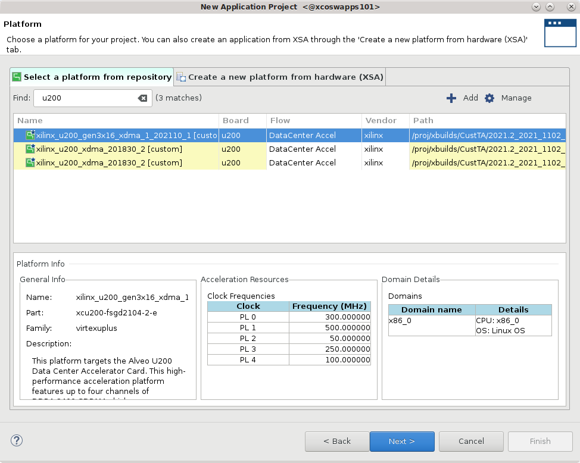

Hardware Acceleration TutorialsSee Vitis™ Development Environment on xilinx.com |
Using the RTL Kernel in a Vitis IDE Project¶
Change directory to the tutorial folder:
cd ./01-rtl_kernel_workflow/reference_filesCreate a new workspace folder called
work1Launch the Vitis IDE, by entering the following command:
vitis -workspace work1
The Vitis IDE opens. Select File > New > Application Project
The New Vitis Application Project window opens.

The New Application Project wizard is displayed, with the overview page showing a brief overview of the process. Click Next.
The Plaform page is displayed. Select
xilinx_u200_gen3x16_xdma_2_202110_1, and then click Next to proceed.

The Application Project Details page is displayed. Make the following selections:
Enter a project name, such as
kernelTest.Create New System Project is enabled, and the System project name is generated from the project name. You can edit it if needed.
The Processor is selected automatically from the platform you selected.
Click Next to proceed.

The Templates page opens, showing application templates you can use to start your project. Select the Empty Application (XRT Native API) and click Finish to create your Vitis application project.
The new project wizard closes and opens the Vitis IDE with your new project loaded.

Add the Hardware Kernel (.xo)¶
You must add the recently generated user-managed RTL kernel (Vadd_A_B.xo) and host code (user-host.cpp) into the project.
Select the
kernelTest_kernelsproject in the Explorer view, and right-click and select the Import Sources command. Browse to thertl_kernel/rtl_kernel.srcs/sources_1/imports/xofolder and select theVadd_A_B.xokernel file to add to the project as shown below. Click Finish to close the dialog box and add the kernel.
Select and open the
kernelTest_kernels.prjproject file in the Hardware Kernel Project Settings view, and select the Add Hardware Function command. Select theVadd_A_B.xofolder and select theVadd_A_Bkernel as shown in the image below. Click OK to close the dialog box and add the hardware function to the project.
Select the
kernelTestproject in the Explorer view, and right-click and select the Import Sources command. Browse to thesrc/hostfolder and select theuser-managed.cppfile to add to the project as shown below. Click Finish to close the dialog box and add the host code.
TIP: There is also an xrt-host file tha can be used to connect to an ap_ctrl_hs version of the RTL kernel.
The Vitis IDE opens. Select File > New > Application Project.
The New Vitis Application Project window opens.
The New Application Project wizard is displayed, with the overview page showing a brief overview of the process. Click Next.
The Plaform page is displayed. Select
xilinx_u200_gen3x16_xdma_2_202110_1, and then click Next to proceed.
The Application Project Details page is displayed. Make the following selections:
Enter a project name, such as
kernelTest.Create New System Project is enabled, and the System project name is generated from the project name. You can edit it if needed.
The Processor is selected automatically from the platform you selected.
Click Next to proceed.
The Templates page opens, showing application templates you can use to start your project. Select the Empty Application (XRT Native API) and click Finish to create your Vitis application project.
The new project wizard closes and opens the Vitis IDE with your new project loaded.
Add the Hardware Kernel (.xo)¶
You must add the recently generated user-managed RTL kernel (Vadd_A_B.xo) and host code (user-host.cpp) into the project.
Select the
kernelTest_kernelsproject in the Explorer view, and right-click and select the Import Sources command. Browse to thertl_kernel/rtl_kernel.srcs/sources_1/imports/xofolder and select theVadd_A_B.xokernel file to add to the project as shown below. Click Finish to close the dialog box and add the kernel.
Select and open the
kernelTest_kernels.prjproject file in the Hardware Kernel Project Settings view, and select the Add Hardware Function command. Select theVadd_A_B.xofolder and select theVadd_A_Bkernel as shown in the image below. Click OK to close the dialog box and add the hardware function to the project.
Select the
kernelTestproject in the Explorer view, and right-click and select the Import Sources command. Browse to thesrc/hostfolder and select theuser-managed.cppfile to add to the project as shown below. Click Finish to close the dialog box and add the host code.
TIP: There is also an xrt-host file tha can be used to connect to an ap_ctrl_hs version of the RTL kernel.
Build the Project¶
With the host application code (host.cpp) and the RTL kernel code (Vadd_A_B.xo) added to the project, you are ready to build and run the project.
In the Hardware Kernel Project Settings view select the Active build Configuration: and set it to Hardware Emulation. The Hardware Emulation target is useful for:
Verifying the functionality of the logic that will go into the FPGA.
Retrieving the initial performance estimates of the accelerator and host application.
Note that the RTL kernel does not support software emulation.
IMPORTANT: You can add a C-model for software emulation to XRT-managed kernels as explained at Adding C-Models to RTL Kernels. However, this is not supported for user-managed kernels.
In the Assistant view, select the top-level system project
kernelTest_systemand click the Build command to build the active Emulation-HW build configuration.The different elements of the Vitis application project are built: the processor code (
host.cpp), the HW link project to link the RTL kernel (.xo) to the target platform, and the top-level system project to package the design.TIP: Because the RTL kernel is imported as an
.xofile, the kernel does not need to be compiled.In the Assistant view, select the Run button, and select Run Configurations.
Select the
System Project Debugconfiguration and click the New launch configuration command to create a new configuration for the run.
to create a new configuration for the run.The
SystemDebugger_kernelTest_systemconfiguration is created.The host program takes the
xclbinfile as an input argument, which you must provide in the Program Arguments list.Select Edit next to
Program Arguments.The Vitis IDE can automatically search and include the
xclbinfile when the Automatically update arguments is enabled.Click OK to add the arguments.
In the
Run Configurationsdialog box click Apply and then click Run to run the configuration, and then verify the results.
The Console window in the Vitis IDE displays TEST PASSED. You have built and run the application using your user-managed RTL kernel.
(Optional) Build and Run the Hardware on the Target Platform¶
In the Vitis Application Project Settings, change Active build configuration to Hardware.
In the system configuration, the kernel code is implemented onto the FPGA, resulting in a binary that will run on the selected platform card.If you have an available hardware platform, build and run the hardware build, and then verify the results.
Makefile Use¶
There is a Makefile included in the 01-rtl_kernel_workflow/reference-files folder. You can use this file to make the following targets:
make run TARGET=<hw_emu | hw> HOST=user
The Makefile will:
Build a Vivado project to package the RTL design IP, and package a user-managed kernel (
.xo)Use the Vitis compiler (
v++) to link the kernel to the target platform and generate the `.xlcbin’ fileCompile the XRT native API host application
./src/host/user-host.cppIf necessary generate the emulation platform and setup the emulation environment
Run the application and kernel
TIP: You can use the Makefile
-noption to generate the command lines without running the commands:make run TARGET=hw_emu HOST=user -n
Summary¶
In this tutorial you have used the Package IP/Package_XO flow to create a user-managed RTL kernel. You packaged the RTL IP project into the compiled XO file needed by the Vitis compiler. You added the RTL kernel to an application project, coupled with the host code, and built and ran the Hardware Emulation configuration. In the Vitis IDE, a binary container was created using the XO file, and a xclbin file was compiled.
Return to Getting Started Pathway — Return to Start of Tutorial
Copyright© 2020-2022 Xilinx